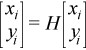
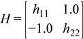
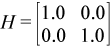

Performs modified Givens rotation of points in the plane.
Syntax
call srotm(n, x, incx, y, incy, param)
call drotm(n, x, incx, y, incy, param)
call rotm(x, y, param)
Include Files
- mkl.fi, blas.f90
Description
Given two vectors x and y, each vector element of these vectors is replaced as follows:

for i=1 to n, where H is a modified Givens transformation matrix whose values are stored in the param(2) through param(5) array. See discussion on the param argument.
Input Parameters
- n
INTEGER. Specifies the number of elements in vectors x and y.
- x
REAL for srotm
DOUBLE PRECISION for drotm
Array, size at least (1 + (n -1)*abs(incx)).
- incx
INTEGER. Specifies the increment for the elements of x.
- y
REAL for srotm
DOUBLE PRECISION for drotm
Array, size at least (1 + (n -1)*abs(incy)).
- incy
INTEGER. Specifies the increment for the elements of y.
- param
REAL for srotm
DOUBLE PRECISION for drotm
Array, size 5.
The elements of the param array are:
param(1) contains a switch, flag. param(2-5) contain h11, h21, h12, and h22, respectively, the components of the array H.
Depending on the values of flag, the components of H are set as follows:
flag = -1.0:

flag = 0.0:

flag = 1.0: 
flag = -2.0: 
In the last three cases, the matrix entries of 1.0, -1.0, and 0.0 are assumed based on the value of flag and are not required to be set in the param vector.
Output Parameters
- x
Each element x(i) is replaced by h11*x(i) + h12*y(i).
- y
Each element y(i) is replaced by h21*x(i) + h22*y(i).
BLAS 95 Interface Notes
Routines in Fortran 95 interface have fewer arguments in the calling sequence than their FORTRAN 77 counterparts. For general conventions applied to skip redundant or reconstructible arguments, see BLAS 95 Interface Conventions.
Specific details for the routine rotm interface are the following:
- x
Holds the vector with the number of elements n.
- y
Holds the vector with the number of elements n.